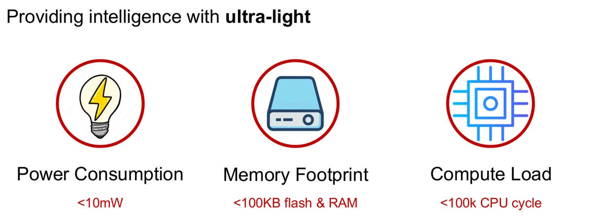
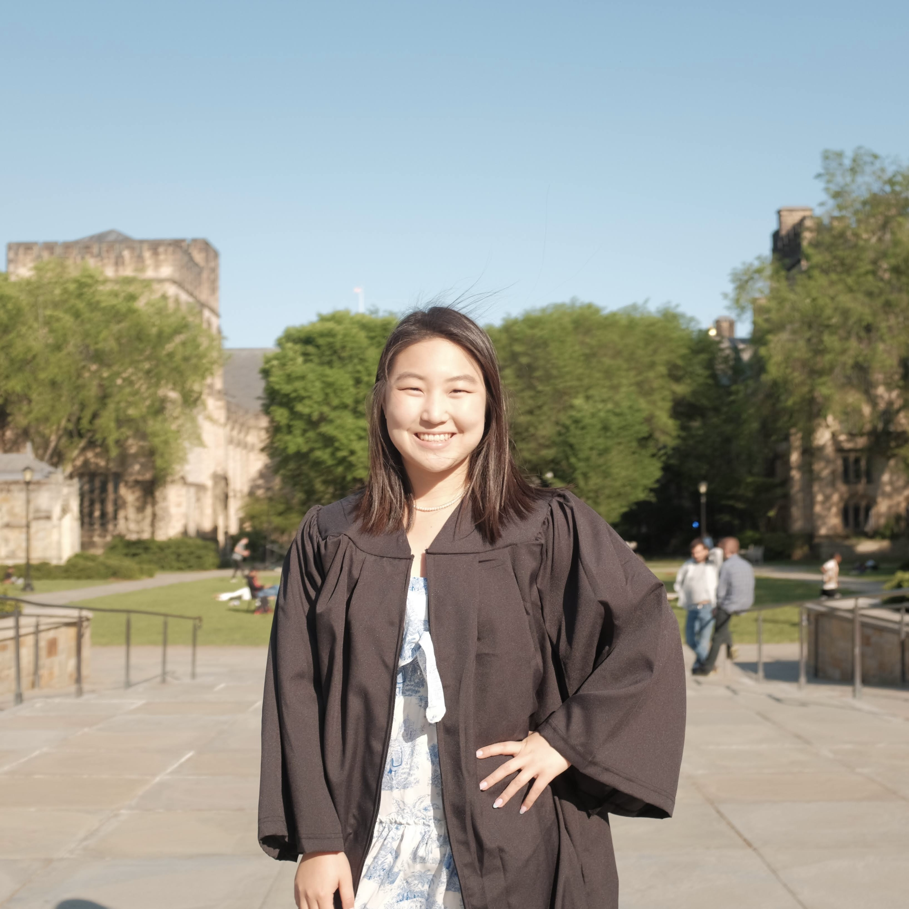
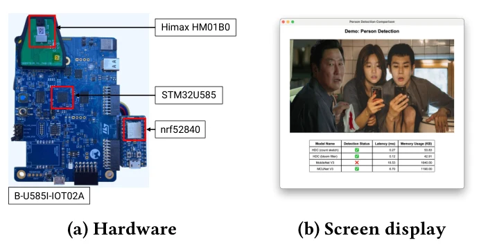
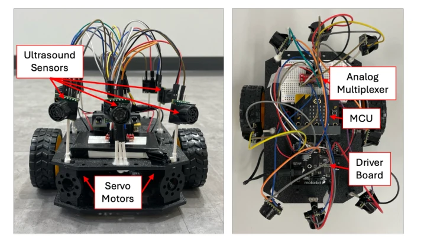
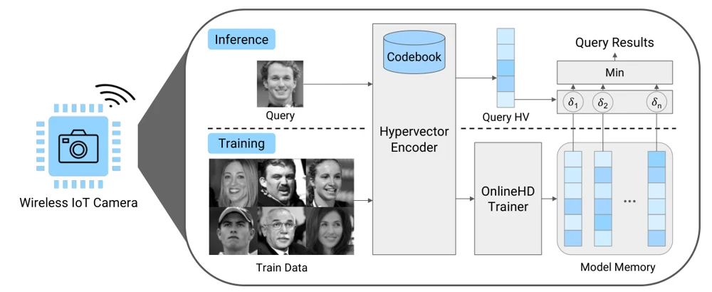
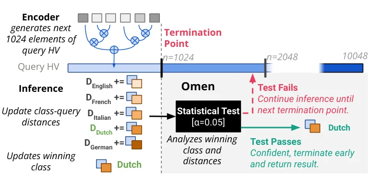
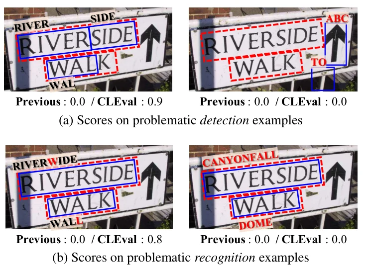
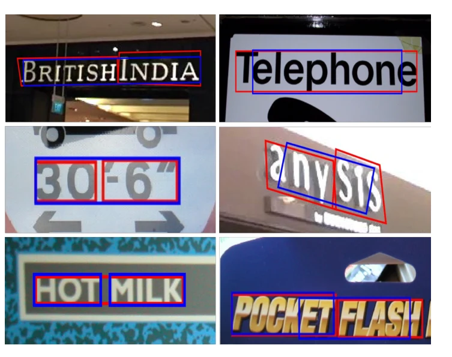
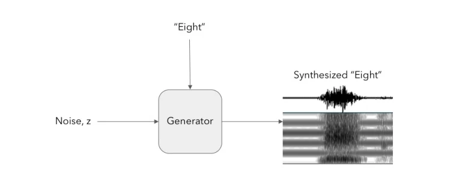

Ultra-Lightweight Edge Intelligence Using Vector Symbolic Architecture.
ACM MobiSys Rising Stars 2025 · Best Presentation Award

I’m a fourth-year Ph.D. candidate in Computer Science at Stanford, advised by Zerina Kapetanovic and Sara Achour. I build physical AI systems that combine low-power sensing, on-device intelligence, and cloud computing.
chae AT stanford DOT edu
Highlighted work

ACM MobiSys Rising Stars 2025 · Best Presentation Award





IEEE/CVF CVPR Workshop 2020


Co-built this course with Professor Zerina Kapetanovic.